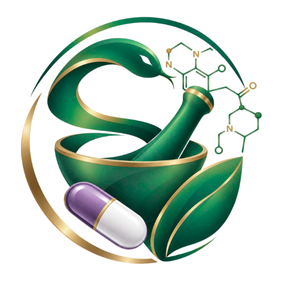
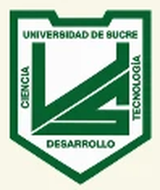
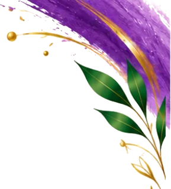
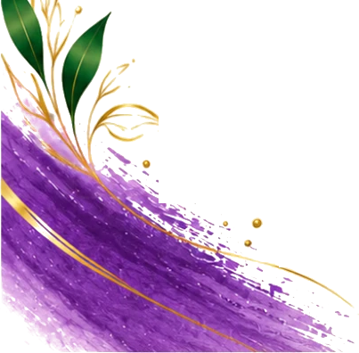
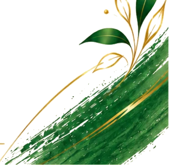

Herbario del simposio
Las plantas de las que se habló
Cinco especies que aparecieron en las ponencias: dos analizadas en el laboratorio de la Universidad de Sucre y tres de las registradas en Chochó.

El farmacéutico y la medicina tradicional:
Preservando saberes y promoviendo el uso seguro

Tecnología en Regencia de Farmacia

Un diálogo entre la ciencia y los saberes ancestrales, en el marco de la estrategia de la OMS sobre medicina tradicional 2025–2034.

Cada pieza del emblema cuenta una parte del tema del simposio. También puedes tocarlas en el mortero 3D de la portada.
Juntas dicen lo mismo que el simposio: el farmacéutico es el puente entre el saber ancestral y la ciencia.
Elige un momento del programa para ver quién habló y qué dejó. También puedes usar las flechas del teclado.
Cinco especies que aparecieron en las ponencias: dos analizadas en el laboratorio de la Universidad de Sucre y tres de las registradas en Chochó.
Lo natural no siempre es sinónimo de seguro.
Mensaje central del simposio, dicho en la apertura por la decana encargada
Los semestres 1.º a 5.º contaron en escena la historia de la farmacia, de las raíces a la farmacia de hoy.
Viaja por cinco mundos, de las raíces ancestrales a la farmacia de hoy. En cada uno te espera el cuadro vivo de un semestre y un portal del tiempo que te lleva a la siguiente época.
Camina con W A S D o las flechas, corre con Shift, o toca el suelo o el minimapa para ir hasta allí. En celular usa el control de la esquina. Acércate a la parada dorada para ver el cuadro vivo de cada mundo y cruza el portal para viajar a la siguiente época.
Toca a una persona del escenario para ir a su momento en el programa.
Sexto semestre de Tecnología en Regencia de Farmacia, a cargo del evento y de los cuadros vivos. El Comité de Marketing llevó la difusión y la transmisión.
Estudiantes de los semestres 1.º a 5.º, con un cuadro vivo cada uno.
Estudiantes y docentes de la Universidad de Sucre, y el público que siguió el simposio en vivo por YouTube.
Cuatro preguntas sobre lo que se dijo en el simposio. Cada respuesta te muestra de qué ponencia sale.
El simposio se transmitió completo en vivo por el canal de YouTube “SIMPOSIO XXII TECNOLOGÍA EN REGENCIA”, y la grabación sigue disponible para quien no pudo asistir.
La invitación se llevó salón por salón en el Campus de Ciencias de la Salud, sede Puerta Blanca, y con los representantes de cada programa.
El 10,5 % de las visualizaciones terminó en un “me gusta”. Cifras al 21 de noviembre de 2026.
Así se vivió la jornada: la entrada al auditorio, los cuadros vivos de cada semestre y los rincones que prepararon los estudiantes. Toca una foto para verla en grande.
Las piezas oficiales del simposio. Toca una para verla en grande.